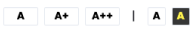

<div>
    
</div>
<mat-toolbar class="mobile-only">
    <mat-toolbar-row>
        
        <span class="example-spacer"></span>
        <button
            mat-icon-button
            class="example-icon"
            aria-label="Example icon-button with menu icon"
            (click)="toggleNav()"
        >
            <mat-icon>menu</mat-icon>
        </button>
    </mat-toolbar-row>
    <mat-toolbar-row *ngIf="showFiller" (click)="toggleNav()">
        <a routerLink="/zgloszenie">Zgłoś zagrożenie</a>
    </mat-toolbar-row>
    <mat-toolbar-row *ngIf="showFiller" (click)="toggleNav()">
        <a routerLink="/mapa">Mapa zagrożeń</a>
    </mat-toolbar-row>
    <mat-toolbar-row *ngIf="showFiller" (click)="toggleNav()">
        <a routerLink="/#dlaczego">Dlaczego warto?</a>
    </mat-toolbar-row>
    <mat-toolbar-row *ngIf="showFiller" (click)="toggleNav()">
        <a routerLink="/#dlaczego">Kontakt</a>
    </mat-toolbar-row>
</mat-toolbar>
<nav class="desktop-only">
    <div class="links">
        
        <a routerLink="/zgloszenie">Zgłoś zagrożenie</a>
        <a routerLink="/mapa">Mapa zagrożeń</a>
        <a routerLink="/" fragment="korzysci">Dlaczego warto?</a>
        <a routerLink="/#kontakt">Kontakt</a>
    </div>
    <div class="login-local">
        <button mat-stroked-button color="primary"><a routerLink="/mapa">Profil służb miejskich</a></button>
    </div>
</nav>

<router-outlet></router-outlet>
